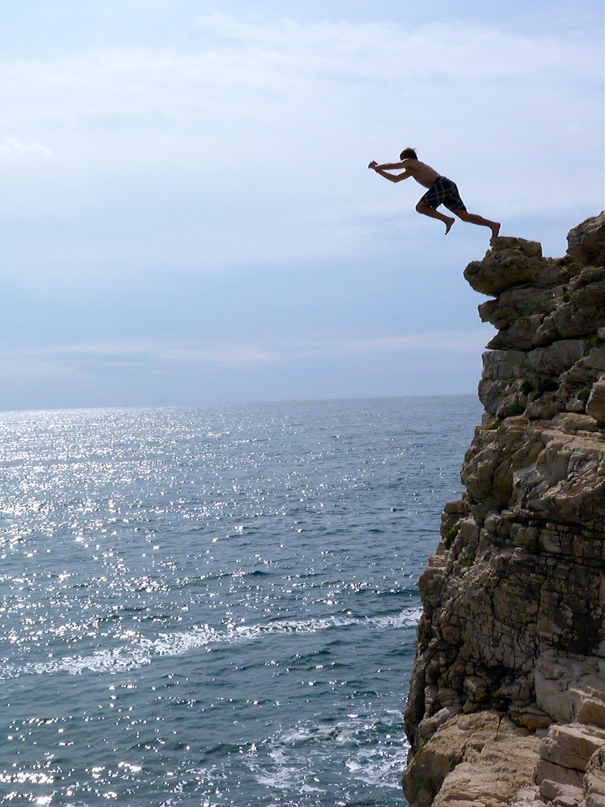

Oduvijek sam bio neodlučan. Zapravo još uvijek jesam. Čovjek bi pomislio da ću s godinama lakše donositi odluke, no nije baš tako. Lako za male odluke. Time se ne zamaram. Ja govorim o velikim životnim odlukama. Jedna od najvećih odluka u mojem životu je bila da li nastaviti faks ili ne. Završio sam tri godine i bilo je pitanje da li ću nastaviti dalje. Tu odluku sam toliko odgađao da na kraju nisam imao izbora nego napustiti fakultet.
“Indecision is the thief of opportunity.” ― Marcus Tullius Cicero
Svaki put kad si neodlučan ti zapravo propustiš priliku. Ja znam da sam imao prilika, ali sam ih propustio jer sam bio neodlučan. Jer sam bio slab. To si više ne mogu priuštiti. Gdje bi bio danas da sam donio odluku na vrijeme?
Jesi li ikada ugasio svijeću s prstima? Ako ideš polako i nesigurno opeći ćeš se. Ali ako doduše ideš brzo i odlučno, tada si ugasio svjeću bez boli. Stoga sam odlučio biti odlučan. Što to znači?Sjećam se kad sam skakao u vodu s velike visine. Mala djeca su skakala bez problema dok sam ja stajao i gledao i razmišljao da li da skočim. Ja sam mislio da sam odlučio da skočim, no kočio me strah. Realno nije mi moglo ništa biti. Iako je bio to skok u vodu od 5 metara. Previše analiziranja me kočilo. Što ako skočim na nekog, što ako padnem i razbijem se?
To je bio čisti strah. Neracionalan. No sad sam imao situaciju: da li dati otkaz na lošem poslu ili ne? Radim noćne smjene u BMW-u kao PLC inženjer. Nakon dvije godine rada zaključio sam da mi se to ne sviđa. Ne želim to raditi. No trebam novce, a nemam alternative. Želio bih naučiti nove vještine koje me stvarno zanimaju i od kojih mogu živjeti.
Da li tražim previše? Da li sam nerealan?
Što bi bilo kada bi ja to zaključio već davno prije? Nekako i jesam, ali nisam imao hrabrosti si priznati. To je bio razlog zašto nisam išao dalje na faks, jer sam znao da me to ne zanima. A kasnije mi je bilo žao baciti to znanje, pa sam ipak odlučio poći tim putem, jer sam imao neki veliki predosjećaj da dolazi velika kriza i morao sam se nekako pripremiti. Nisam si mogao dopustiti da ovisim o ikome. Stoga je moja nova misija bila postati financijski neovisan. Dakako to je bilo mnogo mnogo teže od zamišljenog. Nisam zarađivao koliko sam se nadao, cijene stanova i svega ostaloga je poraslo. Još imam dug put do potpune financijske neovisnosti, no nisam sasvim neuspješan. Zacrtane ciljeve sam ostvario. Sada moram zacrtati nove i ostvariti ih.
"Hard choices, easy life. Easy choices, hard life." - Jerzy Gregorek
Ciljevi nam daju svrhu i osjećaj ispunjenosti. Kad imaš cilj uvijek znaš zašto nešto radiš, sve podrediš tome i sve dobiva svoj smisao. Jedan moj prijatelj je govorio: Ako imaš cilj naći ćeš i put. Stoga samo hrabro naprijed i ne okreći se natrag.